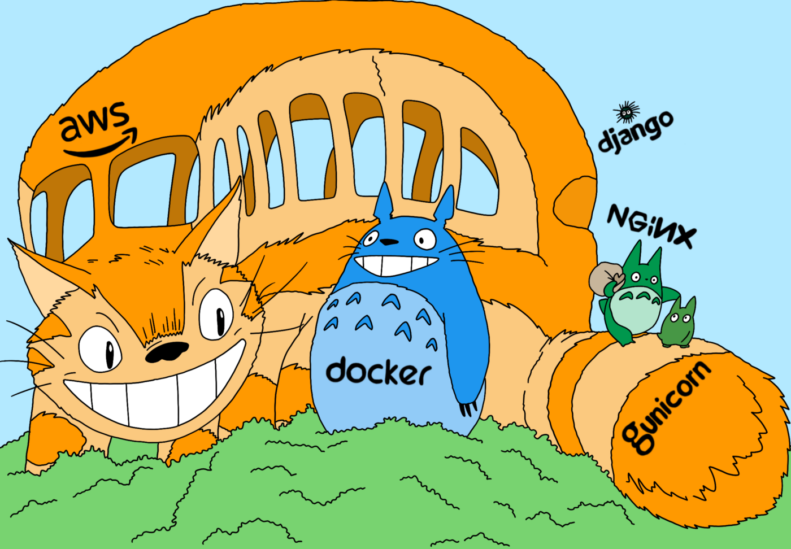

Deploying Django Application on AWS Fargate in 8 minutes
·
Django Rango·
#Django
#AWS
#Docker
#Python 4 min read
4 min read

Totoro — With logo colors (AWS, Docker, Nginx, Guinicorn, and Django).
So far, we have seen how to dockerize the Django application and deploy the application on EC2.
Installing Docker Engine on every EC2 instance and running the Dockerized Django application does not scale and make it harder to maintain ⚠️. However, it’s probably the right choice for a staging environment or an application with 1–2 EC2 instances.
That said, let’s get to it 😎
The plan ✈️
- Install AWS CLI.
- Install ECS CLI.
- Configure Fragate Cluster, Task Definition, and Service.
- Configure AWS log-group.
Step 1: Install AWS and ECS CLI
- Install AWS CLI: AWS does an amazing job with documentation; follow the instructions to install AWS CLI.
- Install ECS CLI: Instructions to install ECS CLI
I have seen quite a bit of confusion on this one; all you need to do is: Download and set the right permissions:
sudo curl -Lo /usr/local/bin/ecs-cli https://amazon-ecs-cli.s3.amazonaws.com/ecs-cli-darwin-amd64-latestchmod +x /usr/local/bin/ecs-cli- Verify the installation:
ecs-cli --version
To Configure Fragate Cluster, Task Definition, and Service: The original post by AWS: Tutorial: Creating a cluster with a Fargate task using the Amazon ECS CLI.
But I guarantee you that you’d see no hiccups if you follow along with this post instead as I make the extra effort to fill in the gaps.
Step 2: Cluster Configuration using Amazon ECS CLI
To define a <cluster-name> with FARGATE launch type in <aws-region>,
Run: ecs-cli configure --cluster <CLUSTER-NAME> --default-launch-type FARGATE --config-name <CONFIG-NAME> --region <AWS-REGION>
Tip ⚠️ I often found instances of mixing up the cluster name and the configuration name, so choose the same name for <CLUSTER-NAME> and <CONFIG-NAME> to avoid confusion. Example: ecs-cli configure --cluster ecs-cluster --default-launch-type FARGATE --config-name ecs-cluster --region ca-central-1
Launch/deploy the cluster:
If you already have a VPC and subnet(s): ecs-cli up --cluster-config test --vpc <VPC-ID> --subnets <SUBNET-ID-1>, <SUBNET-ID-2>
OR let the CLI create one for us: ecs-cli up --cluster-config <CONFIG-NAME>
Note ⚠️ The <CONFIG-NAME> is the same as the one used before.
Make a note of the VPC and Subnet(s), looks like:
VPC created: vpc-xxxxxxxxxxxxxxxx
Subnet created: subnet-xxxxxxxxxxxxxxxx
Subnet created: subnet-xxxxxxxxxxxxxxxx
Step 3: Create the Task Execution IAM Role
Note: IAM roles are not region-specific
The ECS Task Execution IAM role is pre-generated by AWS. Check if it’s already present: AWS Console → IAM → Role → Search for ecsTaskExecutionRole (Verify that it’s attached to AmazonECSTaskExecutionRolePolicy policy).
If it’s not present, create ECS Task Execution IAM role:
Create a file named task-execution-assume-role.json with the following contents:
{
"Version": "2012-10-17",
"Statement": [
{
"Sid": "",
"Effect": "Allow",
"Principal": {
"Service": "ecs-tasks.amazonaws.com"
},
"Action": "sts:AssumeRole"
},
]
}
- Create the task execution role:
aws iam --region <AWS-REGION> create-role --role-name ecsTaskExecutionRole --assume-role-policy-document file://task-execution-assume-role.json - Attach the task execution role policy:
aws iam --region <AWS-REGION> attach-role-policy --role-name ecsTaskExecutionRole --policy-arn arn:aws:iam::aws:policy/service-role/AmazonECSTaskExecutionRolePolicy - Replace
<AWS-REGION>with the AWS region, you choose to use; for instance, in my case, it’sca-central-1
Step 4: Configure Security Group
To keep it simple, instead of using a load balancer, we’ll attach a security group to allow incoming internet traffic at port 80.
Create a security group associated with the <VPC-ID>
aws ec2 create-security-group --description test --group-name ec2-sg-licensing --vpc-id <VPC-ID>- Make a note of the Security Group, looks like:
sg-xxxxxxxxxxxxxxxxand add inbound traffic rules:aws ec2 authorize-security-group-ingress --group-id <SECURITY-GROUP-ID> --protocol tcp --port 80 --cidr 0.0.0.0/0 --region <AWS-REGION>
Step 5: Docker Compose
Docker Compose file set-up:
Amazon ECS CLI supports version 3 and not sub-versions such as 3.8; hence, keeping the docker-compose.yml simple is essential. Here’s an example docker-compose file of a Django-Gunicorn-Nginx application:
version: '3'services:
web:
image: <docker-username>/<project-name>:<tag|latest>
command: gunicorn --bind 0.0.0.0:8000 licensing_platform.wsgi --workers=4
environment:
- DEBUG
- DATABASE_NAME
- DATABASE_USER
- DATABASE_PASSWORD
- HOST_ENDPOINT
- REDIS_LOCATION
volumes:
- static_volume:/app/static
- media_volume:/app/media
expose:
- "8000"
networks:
- django-network nginx:
image: <docker-username>/<nginx-for-project-name>:<tag|latest>
restart: always
volumes:
- static_volume:/app/static
- media_volume:/app/media
ports:
- "80:80"
logging:
driver: awslogs
options:
awslogs-group: ecs-cluster-licensing
awslogs-region: ca-central-1
awslogs-stream-prefix: web
depends_on:
- web
networks:
- django-networknetworks:
django-network:volumes:
media_volume:
static_volume:
- Notice that the logging section in the nginx service; change the awslogs-group and awslogs-region
- Include the environmental variables required by the application as shown in the above
docker-compose.ymlfile. However, a better practice is to use AWS System Manager Parameter Store.
To create a docker-compose.yml for a Django application, refer: dockerize the Django application
The Dockerfile for service web:
FROM ubuntu:20.04
ADD . /app
WORKDIR /appRUN apt-get update -y
RUN apt-get install software-properties-common -y
RUN add-apt-repository ppa:deadsnakes/ppa
RUN apt-get install python3.9 -y
RUN apt-get install python3-pip -y
RUN python3.9 -m pip install --upgrade setuptools
RUN apt-get install sudo ufw build-essential libpq-dev libmysqlclient-dev python3.9-dev default-libmysqlclient-dev libpython3.9-dev -y
RUN python3.9 -m pip install -r requirements.txt
RUN python3.9 -m pip install psycopg2-binary
RUN sudo ufw allow 8000EXPOSE 8000
The Dockerfile for service nginx:
FROM nginx:stable-alpineCOPY default.conf /etc/nginx
COPY default.conf /etc/nginx/conf.dEXPOSE 80
Nginx Configuration file (default.conf):
server { listen 80 default_server;
server_name _; location / {
proxy_pass http://127.0.0.1:8000;
proxy_set_header X-Forwarded-For $proxy_add_x_forwarded_for;
proxy_set_header Host $host;
proxy_redirect off;
} location /static/ {
alias /app/static/;
} location /media/ {
alias /app/static/;
}}
⚠️ Notice that the proxy_pass is http://127.0.0.1:8000 and not http://web:8000.
Step 6: ECS Configuration file
Create a new file ecs-params.yml at the root of the project (the same level of docker-compose.yml) with contents:
version: 1
task_definition:
task_execution_role: ecsTaskExecutionRole
ecs_network_mode: awsvpc
task_size:
mem_limit: 0.5GB
cpu_limit: 256
run_params:
network_configuration:
awsvpc_configuration:
subnets:
- "<SUBNET_ID-1>"
- "<SUBNET-ID-2>"
security_groups:
- "<SECURITY-GROUP-ID>"
assign_public_ip: ENABLED
We previously noted subnets(s) and security group for inbound traffic; make sure to update them.
Step 6: ECS Configuration file
Finally! it’s time to spin up the resources, run:
ecs-cli compose --project-name <CLUSTER-NAME> service up --create-log-groups --cluster-config <CONFIG-NAME>Check the status: ecs-cli compose --project-name <CLUSTER-NAME> service ps --cluster-config <CONFIG-NAME>
Look for the IP address of the Nginx machine, as shown in Figure 1. Visit http://<ip-address>/admin to view the admin page of the Django application or hit an API of your application 🚀

Cite this article as: Adesh Nalpet Adimurthy. (Feb 22, 2022). Deploying Django Application on AWS Fargate in 8 minutes. PyBlog. https://www.pyblog.xyz/django-fargate-in-8-minutes
 #index
#index